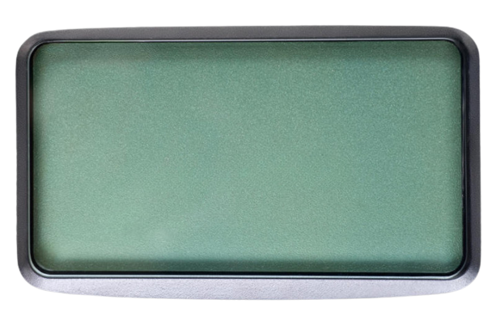

Ebced Hesaplama Makinesi
Javascript: Akhenaton41

Tuþ Takýmý Seçenekleri
Osmanlýca
Ýbranice
Yunanca
Süryanice
Aramice
HESAPLA
Ebced Deðeri:
-
Ebced Yöntemi
Asýl/Temel Ebced
Büyük Ebced
En Küçük Ebced
En Büyük Ebced
Kayýtlý Arapça Ýsimler
🔍
Hesaplama Seçenekleri
Yazma Anýnda Bul
Butonla Bul
Kelime sonlarýndaki “yuvarlak he”leri (ـه) müenneslik “te”sine (ـة) çevir.
?
Þeddeli harfleri 2 kere say.